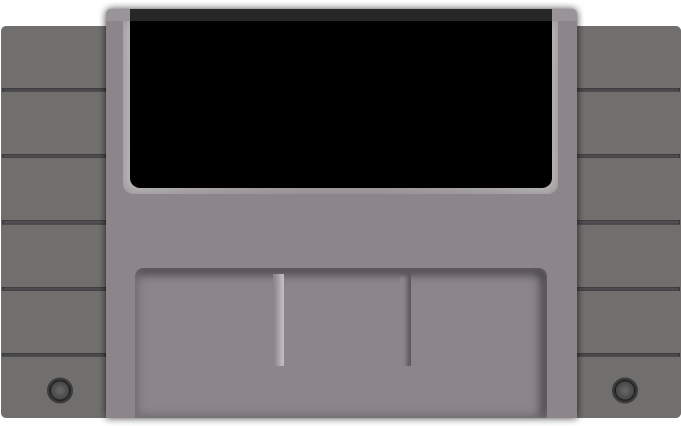

<!DOCTYPE html>
<html lang="en">

<head>
  <meta charset="utf-8" />
  <meta name="viewport" content="width=device-width, initial-scale=1.0, maximum-scale=1.0, user-scalable=no" />

  <title>Introduction to Substrate</title>
  <link rel="shortcut icon" href="./../../assets/favicon.ico" />
  <link rel="stylesheet" href="./../../dist/reset.css" />
  <link rel="stylesheet" href="./../../dist/reveal.css" />
  <link rel="stylesheet" href="./../../assets/styles/PBA-theme.css" id="theme" />
  <link rel="stylesheet" href="./../../css/highlight/shades-of-purple.css" />

  <link rel="stylesheet" href="./../.././assets/styles/custom-classes.css" />

</head>

<body class="site">
  <header class="site-header">
    <!-- This logo is a link only on the watching server, not the production build -->
    <a href="">
      
    </a>
  </header>
  <main class="reveal">
    <article class="slides">
      <section  data-markdown><script type="text/template">

# Introduction to Substrate
</script></section><section  data-markdown><script type="text/template">
## Before Going Any Further 🛑

While I speak, please clone `substrate`, and run `cargo build && cargo build --release`.

> https://github.com/paritytech/substrate
</script></section><section  data-markdown><script type="text/template">
## About These Lectures and Lecturer

- Ground-up, low-level, but hands-on.
- Intentionally avoiding FRAME, but giving you the tools to be successful at it.
- Narratives above facts all.
- Interrupts and questions are always welcome.
</script></section><section ><section data-markdown><script type="text/template">
## What is Substrate?

Substrate is a **Rust framework** for **building blockchains**.
</script></section><section data-markdown><script type="text/template">
### Why Substrate?


<aside class="notes"><p>Highlight the multi-chain part.</p>
</aside></script></section><section data-markdown><script type="text/template">
### Why Substrate?


<aside class="notes"><p>Polkadot is the biggest bet in this ecosystem against chain maximalism, and Substrate plays a big
role in this scenario.</p>
</aside></script></section><section data-markdown><script type="text/template">
### Why Substrate?

- ⛓️ Future is multi-chain.
<!-- .element: class="fragment" -->
- 😭 Building a blockchain is hard. Upgrading it even harder.
<!-- .element: class="fragment" -->
- 💡 Framework!
<!-- .element: class="fragment" -->
- 🧐 But which attitude to take?
<!-- .element: class="fragment" -->
</script></section></section><section ><section data-markdown><script type="text/template">
## Core Philosophies of Substrate 💭

The **pre-substrate** way of thinking:

- 😭 _Building a blockchain is hard. Upgrading it even harder_.
- 💪🏻 We are going to spend maximal resources at making sure we get it right.
<!-- .element: class="fragment" -->
</script></section><section data-markdown><script type="text/template">
### Core Philosophies of Substrate 💭

But has this worked?

- 😭 Bitcoin block size debate
<!-- .element: class="fragment" -->
- 2️⃣ L2s and beyond
<!-- .element: class="fragment" -->
- 📈 Ethereum gas price
<!-- .element: class="fragment" -->

<aside class="notes"><p>Bitcoin block size has never been and is an ongoing debate.</p>
<p>I am not against L2s per se, but it is truth that they mostly exist because the underlying protocol
is too hard/slow to upgrade itself. ETH Gas prices is also shows that the underlying protocol cannot
meet the demands of today.</p>
<p><a href="https://en.wikipedia.org/wiki/Bitcoin_scalability_problem">https://en.wikipedia.org/wiki/Bitcoin_scalability_problem</a>
<a href="https://ycharts.com/indicators/ethereum_average_gas_price">https://ycharts.com/indicators/ethereum_average_gas_price</a></p>
</aside></script></section><section data-markdown><script type="text/template">
### Core Philosophies of Substrate 💭

The **Substrate** way of thinking:

- ☯️ Society and technology evolve
<!-- .element: class="fragment" -->
- 🦸 Humans are fallible
<!-- .element: class="fragment" -->
- 🧠 Best decision of today -> mistake of tomorrow
<!-- .element: class="fragment" -->
</script></section><section data-markdown><script type="text/template">
### Core Philosophies of Substrate 💭

Outcomes of this:

- 🦀 Rust
- 🤩 Generic, Modular and Extensible Design
- 🏦 Governance + Upgradeability

<aside class="notes"><p>Think about how each of these links back to &quot;whatever you decide today will be a mistake soon&quot;.</p>
</aside></script></section></section><section ><section data-markdown><script type="text/template">
## 🦀 Rust

- First line of defense: prevent human error when possible.
- Safe language, no memory safety issues.

<aside class="notes"><p>So at least we don&#39;t want to deal with human error, and only deal with the fact that we cannot
predict the future.</p>
<p>Memory safety is a fundamental issue in most major system-level programming languages.</p>
<p>Some such mistakes are impossible to make in Rust.</p>
</aside></script></section><section data-markdown><script type="text/template">
### 🦀 Rust

```c
int main() {
    int* x = malloc(sizeof(int));
    *x = 10;
    int* y = x;
    free(x);
    printf("%d\n", *y);  // Accessing memory after it's been freed
}
```

<br/>

```rust
fn main() {
    let x = Box::new(10);
    let y = x;
    println!("{}", *y); // ❌
}
```

<!-- .element: class="fragment" -->

<aside class="notes"><p>another one:</p>
<pre><code class="language-c">int* foo() {
    int x = 10;
    return &amp;x;
}

int main() {
    int* y = foo();
    printf(&quot;%d\n&quot;, *y); // Accessing memory out of its scope
}
</code></pre>
<br/>

<pre><code class="language-rust">fn foo() -&gt; &amp;&#39;static i32 {
    let x = 10;
    &amp;x
}

fn main() {
    let y = foo();
    println!(&quot;{}&quot;, y); // ❌
}
</code></pre>
</aside></script></section><section data-markdown><script type="text/template">
### 🦀 Rust

> Microsoft and Google have each stated that software memory safety issues are behind around 70 percent of their vulnerabilities.

<aside class="notes"><p><a href="https://www.nsa.gov/Press-Room/News-Highlights/Article/Article/3215760/nsa-releases-guidance-on-how-to-protect-against-software-memory-safety-issues/#:~:text=Microsoft%20and%20Google%20have%20each,70%20percent%20of%20their%20vulnerabilities">https://www.nsa.gov/Press-Room/News-Highlights/Article/Article/3215760/nsa-releases-guidance-on-how-to-protect-against-software-memory-safety-issues/#:~:text=Microsoft%20and%20Google%20have%20each,70%20percent%20of%20their%20vulnerabilities</a>.</p>
</aside></script></section><section data-markdown><script type="text/template">
### 🦀 Rust

- 🏎️ Most Rust abstractions are **zero-cost**.
- ⏰ Rust has (almost) no "runtime".

<br/>


<aside class="notes"><p>this is not 100% accurate though, rust has a small runtime that is the panic handler etc. Rust for
Rustacean&#39;s chapter on <code>no_std</code> covers this very well.</p>
<p>Also, this is a good time to talk about how we use &quot;Runtime&quot; in a different way.</p>
</aside></script></section></section><section ><section data-markdown><script type="text/template">
## 🤩 Generic, Modular and Extensible Design

- Second line of defense.
- Our _execution_ (possibly thanks to Rust) is perfect, but we can't predict the future.

<aside class="notes"><p>this is where a module, generic design is useful. You can change components easily based on the
needs of the future.</p>
</aside></script></section><section data-markdown><script type="text/template">
### 🤩 Generic, Modular and Extensible Design

- Multiple consensus engines (BABE/Grandpa/AURA/PoW/Sassafras)
<!-- .element: class="fragment" -->
- Multiple network protocols (QUIC, TCP)
<!-- .element: class="fragment" -->
- Multiple database implementations (ParityDB, RocksDB)
<!-- .element: class="fragment" -->
- Highly configurable, graph-based transaction-pool.
<!-- .element: class="fragment" -->
- Easy to change primitives: AccountId, Signature, BlockNumber, Header, Hash, and many more.
<!-- .element: class="fragment" -->

<aside class="notes"><p>FRAME takes this even multiple steps further, but that&#39;s for later.</p>
<p>These are all examples of being generic, modular and extensible at the Substrate level. FRAME takes
these even further, but more on that later.</p>
</aside></script></section><section data-markdown><script type="text/template">
### 🤩 Generic, Modular and Extensible Design

- **AlephZero**: Custom finality, DAG-based, 1s block time.
- **Moonbeam**: Ethereum compatible, build with substrate.
- **HydraDX**: Custom transaction pool logic to match DEX orders.
- **Kulupu**: Proof of work, custom hashing.

<aside class="notes"><p>Substrate has been coded, from the ground up, such that it is easy to have multiple implementations
for certain functions. Heavy use of traits and generics is the key to achieve this. As noted,
Substrate has a lot of APIs, and optional implementations. You are bound to the API, but not the
particular implementation.</p>
</aside></script></section></section><section ><section data-markdown><script type="text/template">
## 🏦 Governance + Upgradeability

- Third, final, and non-negotiable line of defense to survive the test of time.
</script></section><section data-markdown><script type="text/template">
### 🏦 Governance + Upgradeability

- We have correct code, and components are easy to swap, replace, and upgrade.
- What use is that, if we cannot agree on what to replace/upgrade?
- Governance!
<!-- .element: class="fragment" -->
- What use is governance, if the upgrade cannot be enacted?
<!-- .element: class="fragment" -->
- (trustlessly) Upgradeability!
<!-- .element: class="fragment" -->

<aside class="notes"><p>Even if we are governable, but we still need &quot;trust&quot; to enact the upgrade, it is hardly any better.
In essence, if an upgrade mechanism is not self-enacting, it might as well just reside offchain and
be a signaling mechanism.</p>
</aside></script></section><section data-markdown><script type="text/template">
### 🏦 Governance + Upgradeability

- ✅ Governance: Easy
- 😢 Upgradeability: Not so much
</script></section><section data-markdown><script type="text/template">
### 🏦 Governance + Upgradeability

- How does a typical blockchain upgrade itself?

<aside class="notes"><ol>
<li>Discussion, offchain signaling</li>
<li>Possibly onchain voting</li>
<li>Hard(ish) Fork</li>
</ol>
</aside></script></section><section data-markdown><script type="text/template">
### 🏦 Governance + Upgradeability


</script></section><section data-markdown><script type="text/template">
### 🏦 Governance + Upgradeability


<aside class="notes"><p>the problem is that the system is one big monolith protocol. Updating any part of it requires the
whole thing to be updated.</p>
</aside></script></section><section data-markdown><script type="text/template">
### 🏦 Governance + Upgradeability

_The way to make a protocol truly upgradeable is to design a meta-protocol that is not upgradeable._
</script></section><section data-markdown><script type="text/template">
### 🏦 Governance + Upgradeability


<aside class="notes"><p>In this figure, the meta-protocol, the substrate client, is not forklessly upgrade-able. It can only
be upgraded with a fork. The WASM protocol, though, can be upgraded forklessly.</p>
</aside></script></section><section data-markdown><script type="text/template">
### 🏦 Governance + Upgradeability


</script></section><section data-markdown><script type="text/template">
### 🏦 Governance + Upgradeability

- Fixed meta-protocol?
- &shy;<!-- .element: class="fragment" --> "_State machine as stored Wasm_" in the Substrate client.
- <!-- .element: class="fragment" --> inherently upgradeable protocol?
- <!-- .element: class="fragment" --> Substrate Wasm Runtime
</script></section></section><section ><section data-markdown><script type="text/template">
### Substrate Architecture


</script></section><section data-markdown><script type="text/template">
#### Substrate (simplified) Architecture

<pba-cols>

<pba-col center>
<h3 style="color: var(--substrate-runtime); top: 0"> Runtime (Protocol) </h3>

- Application logic
- Wasm (maybe **FRAME**)
- Stored as a part of your chain state
- Also known as: STF

</pba-col>

<pba-col center>
<h3 style="color: var(--substrate-host); top: 0"> Client (Meta-protocol) </h3>

- Native Binary
- Executes the Wasm runtime
- Everything else: Database, Networking, Mempool, Consensus..
- Also known as: Host

</pba-col>

</pba-cols>
</script></section></section><section  data-markdown><script type="text/template">
## The Runtime

<div>

- Runtime -> **Application Logic**.

</div>
<!-- .element: class="fragment" -->
<div>

- A _fancy_ term: Runtime -> **State Transition Function**.

</div>
<!-- .element: class="fragment" -->
<div>

- A _technical_ term: Runtime -> **how to execute blocks**.

</div>
<!-- .element: class="fragment" -->

<aside class="notes"><ul>
<li>I would personally call the runtime STF to avoid confusion with the &quot;runtime&quot; that is the general
programming runtime, but kinda too late for that now.</li>
<li>Among the definitions of the Wasm runtime, let&#39;s recap what the state transition is.</li>
<li>The block execution definition will be described more in the Wasm-meta lecture.</li>
</ul>
</aside></script></section><section ><section data-markdown><script type="text/template">
## State Transition Function

**State**


<aside class="notes"><p>entire set of data upon which we want to maintain a consensus.
key value.
associated with each block.</p>
</aside></script></section><section data-markdown><script type="text/template">
### State Transition Function

**Transition Function**


</script></section><section data-markdown><script type="text/template">
### State Transition Function

$$STF = F(block_{N}, state_{N}, code_{N}): state_{N+1}$$
</script></section><section data-markdown><script type="text/template">
### State Transition Function


<aside class="notes"><p>The Wasm runtime in this figure is in fact obtained from the state (see <code>0x123</code>)</p>
</aside></script></section><section data-markdown><script type="text/template">
### State Transition Function


</script></section><section data-markdown><script type="text/template">
### State Transition Function


<aside class="notes"><p>THIS IS HOW A META-PROTOCOL MAKES A SYSTEM UPGRADE-ABLE.</p>
<p>could we have updated the code in N+1? By default, no because we load the wasm before you even look
into the block.</p>
<p>IMPORTANT: State is not IN THE BLOCK, each state has AN ASSOCIATED BLOCK.</p>
<p>Keeping the state is 100% optional. You can always re-create the state of block <code>N</code> by re-executing
block <code>[0, .., N-1]</code>.</p>
<p>ofc, changing the Wasm code cannot be done by anyone. That&#39;s up to governance.</p>
</aside></script></section></section><section  data-markdown><script type="text/template">
## Full Substrate Architecture


</script></section><section ><section data-markdown><script type="text/template">
## Positive Consequences of _Wasm_ Runtime 🔥
</script></section><section data-markdown><script type="text/template">
### 🤖 Deterministic Execution

- Portable, yet deterministic.

<aside class="notes"><p>Wasm&#39;s instruction set is deterministic, so all good.</p>
</aside></script></section><section data-markdown><script type="text/template">
### 🧱 Sandboxing

- Useful when executing untrusted code.

1. Smart contracts
2. Parachain runtime

<aside class="notes"><p>howe can we guarantee that neither enter an infinite loop, or try to access the filesystem?</p>
</aside></script></section><section data-markdown><script type="text/template">
### 🌈 Easier (light)Client Development

<aside class="notes"><p>for the case of client, your client only needs to implement a set of host environments, and NOT
re-implement the business logic.</p>
<p>Simply compare the process to create an alternative client for Ethereum, where you need to
re-implement the EVM.</p>
<p>Same applies to light client, as they do not need to deal with the state transition function.</p>
</aside></script></section><section data-markdown><script type="text/template">
### 😎 Forkless Upgrade


</script></section><section data-markdown><script type="text/template">
### 😎 Forkless Upgrade


</script></section><section data-markdown><script type="text/template">
### 😎 Forkless Upgrade

This update was:

1. Forkless
2. Self-enacting

<aside class="notes"><p>take a moment to establish that this upgrade is forkless. The runtime is upgraded, but the client is
not. In fact, the client didn&#39;t need to know about this at all.</p>
<p>This is what the meta-protocol achieves.</p>
</aside></script></section></section><section  data-markdown><script type="text/template">
## Negative Consequences of _Wasm_ Runtime

- 😩 Constrained resources (memory, speed, host access).
- 🌈 Client diversification != state-transition diversification

<aside class="notes"><ul>
<li>4GB of memory, which we limit even further.</li>
<li>Wasm has no allocator+panic handler of its own</li>
<li>Can be slower than native, depending on the executor/execution method.</li>
<li>Limited access to the host host env, all needs to be done through syscalls.</li>
</ul>
<p>Less state-transition diversification, because the runtime is the same for all clients. If there a
bug in it, everyone is affected.</p>
</aside></script></section><section  data-markdown><script type="text/template">
## Consensus <> Runtime 🤔

- Yes, consensus is not a core part of a blockchain runtime. Why?
- Not part of your STF!
<!-- .element: class="fragment" -->
- The consensus protocol is to your runtime what HTTP is to Facebook.
<!-- .element: class="fragment" -->

<aside class="notes"><p>comments from Joshy:</p>
<p>I think this is important. The runtime is the application you want to run.</p>
<p>Consensus is outside of this application helping us agree what the official state of this runtime
is. Last wave I used this analogy.</p>
<p>Imagine a writers room for some TV show. Writers are sitting around coming up with potential plot
points for future episodes. Any of their ideas could work. But eventually they need to agree what
the next episode to air actually will be.</p>
</aside></script></section><section  data-markdown><script type="text/template">
## Database <> State 🤔

- State is the entire set of key value data that is associated with one block.
- Database is the component that allows this be stored in disk. May or may not be key-value.


<aside class="notes"><p>state is sometimes called &quot;storage&quot; asd well.</p>
</aside></script></section><section ><section data-markdown><script type="text/template">
## Database <> Runtime 🤔

- Yes, data is stored outside of the runtime. Why?
- Wasm runtime does not have the means to store it.
<!-- .element: class="fragment" -->
- Yet, the interpretation of the data is up to the runtime.
<!-- .element: class="fragment" -->
</script></section><section data-markdown><script type="text/template">
### Database <> Runtime 🤔


</script></section><section data-markdown><script type="text/template">
## The Client: Database 🤔

- The database, from the client's PoV, is a _untyped_, key-value storage.
- The runtime knows which key/value means what.
</script></section></section><section ><section data-markdown><script type="text/template">
## State of Light Clients

- Client that follows headers, therefore knows state roots and can ask for state-proofs to do more.
</script></section><section data-markdown><script type="text/template">
### State of Light Clients

<pba-cols>
<pba-col>

- Not only possible, but they can also run as Wasm, in the browser!
- "Substrate Connect" / SMOLDOT

</pba-col>
<pba-col>


</pba-col>
</pba-cols>

<aside class="notes"><p>What was a light client? follows only block headers, therefore knows state roots, and a few other
pieces of information, others send it state proofs if it wishes to do more.</p>
<p>SMOLDOT is not exactly a substrate client. It is mainly designed to work with Polkadot. But with
minimal tweaks, you could make it work for more substrate based chains.</p>
<p>This has to do with the fact that consensus and a few other bits of the client and runtime are not
100% independent. For example, GRANDPA has a pallet on the runtime side, but is mostly in the
client. Now, a client that is configured with GRANDPA can only work with runtimes that are also
configured with GRANDPA.</p>
</aside></script></section></section><section ><section data-markdown><script type="text/template">
## Communication Paths


</script></section><section data-markdown><script type="text/template">
### Communication Paths


</script></section><section data-markdown><script type="text/template">
### Example: SCALE vs JSON

- SCALE is an efficient, non-descriptive, binary encoding format, used EXTENSIVELY in the Substrate ecosystem.
</script></section><section data-markdown><script type="text/template">
### Example: SCALE vs JSON

```rust
use parity_scale_codec::{Encode};

#[derive(Encode)]
struct Example {
	number: u8,
	is_cool: bool,
	optional: Option<u32>,
}

fn main() {
	let my_struct = Example {
		number: 42,
		is_cool: true,
		optional: Some(69),
	};
	println!("{:?}", my_struct.encode());
	// [42, 1, 1, 69, 0, 0, 0]
	println!("{:?}", my_struct.encode().len());
	// 7
}
```
</script></section><section data-markdown><script type="text/template">
### Example: SCALE vs JSON

```rust
use serde::{Serialize};

#[derive(Serialize)]
struct Example {
	number: u8,
	is_cool: bool,
	optional: Option<u32>,
}

fn main() {
	let my_struct = Example {
		number: 42,
		is_cool: true,
		optional: Some(69),
	};
	println!("{:?}", serde_json::to_string(&my_struct).unwrap());
	// "{\"number\":42,\"is_cool\":true,\"optional\":69}"
	println!("{:?}", serde_json::to_string(&my_struct).unwrap().len());
	// 42
}
```
</script></section></section><section  data-markdown><script type="text/template">
## Substrate and Polkadot


</script></section><section ><section data-markdown><script type="text/template">
## Substrate and Smart Contracts


</script></section><section data-markdown><script type="text/template">
### Substrate and Smart Contracts

> A Substrate-Connect extension is syncing a chain who's runtime is executing wasm contracts.

Question: How many nested Wasm blobs are executing one another?
</script></section><section data-markdown><script type="text/template">
### Substrate and Smart Contracts

<pba-cols>
<pba-col center>


</pba-col>
<pba-col>

- The browser is executing:
- a Wasm blob (substrate-connect)
- that executes a Wasm blob (runtime)
- that executes a Wasm blob (contract)

</pba-col>
</pba-cols>
</script></section><section data-markdown><script type="text/template">
### Substrate and Smart Contracts


</script></section><section data-markdown><script type="text/template">
### Substrate and Smart Contracts

- So when should you write with a smart contract (Ink!) and when a Runtime (FRAME)?

<aside class="notes"><p>I was asked this yesterday as well. My latest answer is: if you don&#39;t need any of the customizations
that a blockchain client/runtime gives to you, and the performance of a shared platform is okay for
you, then go with a smart contract. If you need more, you need a &quot;runtime&quot; (some kind of chian,
parachain or solo)</p>
<p>An example of customization is that a runtime has access to <code>on_initialize</code> etc.</p>
<p>Also, a contract can not have fee-less transactions.</p>
<p>Also, a contract usually depends on a token for gas, while a runtime can be in principle token-less
fee-less.</p>
</aside></script></section></section><section  data-markdown><script type="text/template">
## Technical Freedom vs Ease


</script></section><section  data-markdown><script type="text/template">
### Substrate: The Gaming Console of Blockchains!

<pba-cols>
<pba-col>


Substrate Client

</pba-col>
<pba-col>



Substrate's Wasm Runtime

</pba-col>
</pba-cols>

<aside class="notes"><p>Another good analogy: Client is the FPGA, and FRAME/Wasm is the VHDL.</p>
</aside></script></section><section ><section data-markdown><script type="text/template">
## Lecture Recap

- Substrate's design stems from 3 core principles:
  - **Rust**, **Generic Design**, **Upgradeability/Governance**
- Client / Runtime architecture
- State Transition
- Positive and negative consequences of Wasm
- Substrate next to Polkadot and other chains.
- Substrate for Smart Contracts.
</script></section><section data-markdown><script type="text/template">
### Recap: Substrate Architecture


</script></section><section data-markdown><script type="text/template">
## Recap: 🏦 Governance and Upgradeability

A timeless system must be:

1. Generic
2. Governable
3. Trust-less-ly Upgradeable.

Substrate's Wasm meta-protocol exactly enables the latest ✅

<!-- .element: class="fragment" -->

<aside class="notes"><p>Question: how would you put the meta-protocol of Substrate into words?</p>
<p>The client is basically a wasm meta-protocol that does only one thing. This meta-protocol is
hardcoded, but the protocol itself is flexible.</p>
</aside></script></section></section><section ><section data-markdown><script type="text/template">
## Rest of This Module! 😈

#### Track: Main Lectures

- Wasm Meta Protocol
- Substrate Storage

#### Track: Aux Lecture

- TX-Pool
- Substrate: Show Me The Code
- Substrate Interactions
- SCALE

#### Track: Graded Activity

- FRAME-Less
</script></section><section data-markdown><script type="text/template">
### Rest of This Module! 😈

#### Day 0

- Introduction ✅ (60m)
- Wasm Meta Protocol (120+m)
  - Activity: Finding Runtime APIs and Host Functions in Substrate
- 🌭 _Lunch Break_
- Show Me The Code (60m)
- Substrate Interactions (60m)
- FRAME-Less Activity (60m)

<aside class="notes"><p>We are aware that the module is highly skewed in terms of lecture time, but is is intentional and we
want to see how it works. This allows you to kickstart with your assignment earlier.</p>
</aside></script></section><section data-markdown><script type="text/template">
## Rest of This Module! 😈

#### Day 1

- Transaction Pool (60m)
- SCALE (60m)
- Substrate/FRAME Tips and Tricks
- 🌭 _Lunch Break_
- FRAME-Less Activity
</script></section><section data-markdown><script type="text/template">
## Rest of This Module! 😈

#### Day 2

- Substrate Storage (90m)
- FRAME-Less Activity
- 🌭 _Lunch Break_
- End of Module 🎉
</script></section></section><section  data-markdown><script type="text/template">
## Additional Resources! 😋

> Check speaker notes (click "s" 😉)


<aside class="notes"><ul>
<li><p>Great documentation about all things substrate/blockchain from SMOLDOT: <a href="https://docs.rs/smoldot/latest/smoldot/">https://docs.rs/smoldot/latest/smoldot/</a></p>
</li>
<li><p>Read more about why we use Rust at Parity: <a href="https://www.parity.io/blog/why-rust">https://www.parity.io/blog/why-rust</a></p>
</li>
<li><p>An interesting question on JVM/Wasm: <a href="https://stackoverflow.com/questions/58131892/why-the-jvm-cannot-be-used-in-place-of-webassembly">https://stackoverflow.com/questions/58131892/why-the-jvm-cannot-be-used-in-place-of-webassembly</a></p>
</li>
<li><p>Rust safety: <a href="https://stanford-cs242.github.io/f18/lectures/05-1-rust-memory-safety.html">https://stanford-cs242.github.io/f18/lectures/05-1-rust-memory-safety.html</a></p>
</li>
<li><p><a href="https://www.reddit.com/r/rust/comments/5y3cxb/how_many_security_exploits_would_rust_prevent/">https://www.reddit.com/r/rust/comments/5y3cxb/how_many_security_exploits_would_rust_prevent/</a></p>
</li>
<li><p>The substrate clients should still have some level of <em>determinism in their performance</em>. If
authority nodes have extremely varied performances, they could start finalizing different forks.</p>
</li>
<li><p>There have been attempts at writing FRAME alternatives, namely AssemblyScript. <a href="https://github.com/LimeChain/as-substrate-runtime">https://github.com/LimeChain/as-substrate-runtime</a></p>
</li>
<li><p>Think about the differences between a runtime and a smart contract.</p>
<ul>
<li>A runtime is in some sense a smart contract as well, but not a user-deployed one.</li>
<li><a href="https://en.wikipedia.org/wiki/Smart_contract">https://en.wikipedia.org/wiki/Smart_contract</a></li>
<li><a href="https://www.futurelearn.com/info/courses/defi-exploring-decentralised-finance-with-blockchain-technologies/0/steps/251885#:~:text=to%20the%201990s.-,Writing%20in%201994%2C%20the%20computer%20scientist%20Nick%20Szabo%20defined%20a,of%20artificial%20intelligence%20is%20implied">https://www.futurelearn.com/info/courses/defi-exploring-decentralised-finance-with-blockchain-technologies/0/steps/251885#:~:text=to%20the%201990s.-,Writing%20in%201994%2C%20the%20computer%20scientist%20Nick%20Szabo%20defined%20a,of%20artificial%20intelligence%20is%20implied</a>.</li>
</ul>
</li>
<li><p>Substrate Primitives (<code>sp-*</code>), Frame (<code>frame-*</code>) and the pallets (<code>pallets-*</code>), binaries (<code>/bin</code>)
and all other utilities are licensed under <a href="https://www.apache.org/licenses/LICENSE-2.0.html">Apache
2.0</a>.</p>
</li>
</ul>
<p>Substrate Client (<code>/client/*</code> / <code>sc-*</code>) is licensed under <a href="https://www.gnu.org/licenses/gpl-3.0.html">GPL
v3.0</a> with a <a href="https://www.gnu.org/software/classpath/license.html">classpath linking
exception</a>.</p>
<ul>
<li><p>Apache2 allows teams full freedom over what and how they release, and giving licensing clarity to
commercial teams.</p>
</li>
<li><p>GPL3 ensures any deeper improvements made to Substrate&#39;s core logic (e.g. Substrate&#39;s internal
consensus, crypto or database code) to be contributed back so everyone can benefit.</p>
</li>
<li><p>Currently, the Wasm binary spec v1 is used, read more about the new version here: <a href="https://webassembly.github.io/spec/core/binary/index.html">https://webassembly.github.io/spec/core/binary/index.html</a></p>
</li>
</ul>
<h3 id="post-lecture-feedback">Post Lecture Feedback</h3>
<ul>
<li>a takeaway after each section, more clear path (shawn).</li>
</ul>
</aside></script></section><section ><section data-markdown><script type="text/template">
## Appendix: What is Wasm Anyways?

> WebAssembly (abbreviated Wasm) is a _binary instruction format_ for a _stack-based virtual
> machine_. Wasm is designed as a _portable compilation_ target for programming languages, enabling
> deployment on the web for client and server applications.
</script></section><section data-markdown><script type="text/template">
### What is Wasm Anyways?


</script></section><section data-markdown><script type="text/template">
### What is Wasm Anyways?

<pba-cols>
<pba-col>

- Wasm ❤️ Web
- Streaming and rapid compilation.
- Designed with the concept of host in mind.
  Sandboxed, permissioned sys-calls.

> Anyone remember "Java Applets"?

</pba-col>
<pba-col>


</pba-col>
</pba-cols>

<aside class="notes"><p>People actually tried sticking things like JVM into the browser (<em>Java Applets</em>), but it didn&#39;t work.</p>
</aside></script></section><section data-markdown><script type="text/template">
### How to Write a Wasm Runtime?

- Any language that can compile to Wasm and exposes a fixed set of functions, to be used by the client.
- ... But, of course, Substrate comes with a framework to make this developer-friendly, **FRAME™️**.
</script></section></section><section ><section data-markdown><script type="text/template">
## Appendix: More Diagrams of Substrate and Polkadot

<aside class="notes"><p>I made these figures recently to explain the relationship between Substrate, Cumulus and Polkadot.
They use the most generic term for client and runtime, namely &quot;Host&quot; and &quot;STF&quot; respectively.</p>
</aside></script></section><section data-markdown><script type="text/template">
Substrate


</script></section><section data-markdown><script type="text/template">
Polkadot

</script></section><section data-markdown><script type="text/template">
A Parachain


</script></section></section>
    </article>
  </main>

  <script src="./../../dist/reveal.js"></script>

  <script src="./../../plugin/markdown/markdown.js"></script>
  <script src="./../../plugin/highlight/highlight.js"></script>
  <script src="./../../plugin/zoom/zoom.js"></script>
  <script src="./../../plugin/notes/notes.js"></script>
  <script src="./../../plugin/math/math.js"></script>

  <script src="./../../assets/plugin/mermaid.js"></script>
  <script src="./../../assets/plugin/mermaid-theme.js"></script>

  <script src="./../../assets/plugin/chart/chart.js"></script>
  <script src="./../../assets/plugin/chart/chart.min.js"></script>

  <script src="./../../assets/plugin/tailwindcss.min.js"></script>

  <script>
    function extend() {
      var target = {};
      for (var i = 0; i < arguments.length; i++) {
        var source = arguments[i];
        for (var key in source) {
          if (source.hasOwnProperty(key)) {
            target[key] = source[key];
          }
        }
      }
      return target;
    }

    // default options to init reveal.js
    var defaultOptions = {
      controls: true,
      progress: true,
      history: true,
      center: true,
      transition: 'default', // none/fade/slide/convex/concave/zoom
      slideNumber: true,
      mermaid: {
        startOnLoad: false,
        logLevel: 3,
        theme: 'base',
        themeVariables: {
          primaryColor: purple,
          primaryTextColor: white,
          primaryBorderColor: pink,
          lineColor: pink,
          secondaryColor: lightPurple,
          tertiaryColor: lightPurple,
        },
      },
      chart: {
        defaults: {
          color: 'lightgray', // color of labels
          scale: {
            beginAtZero: true,
            ticks: { stepSize: 1 },
            grid: { color: "lightgray" }, // color of grid lines
          },
        },
        line: { borderColor: ["#ccc", "#E6007A", "#6D3AEE"], "borderDash": [[5, 10], [0, 0]] },
        bar: { backgroundColor: ["#ccc", "#E6007A", "#6D3AEE"] },
      },
      plugins: [
        RevealMarkdown,
        RevealHighlight,
        RevealZoom,
        RevealNotes,
        RevealMath,
        RevealMermaid,
        RevealChart
      ]
    };

    // options from URL query string
    var queryOptions = Reveal().getQueryHash() || {};

    var options = extend(defaultOptions, {"width":1400,"height":900,"margin":0,"minScale":0.2,"maxScale":2,"transition":"none","controls":true,"progress":true,"center":true,"slideNumber":true,"backgroundTransition":"fade"}, queryOptions);
  </script>


  <script>
    Reveal.initialize(options);
  </script>
</body>

</html>